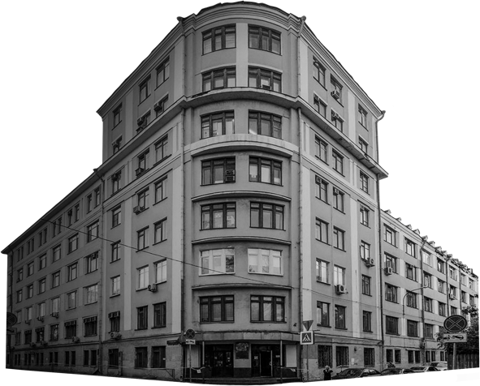
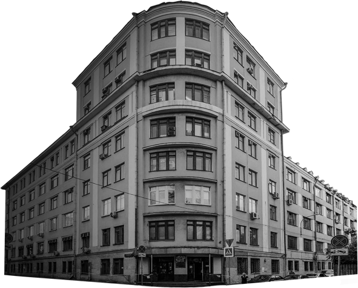
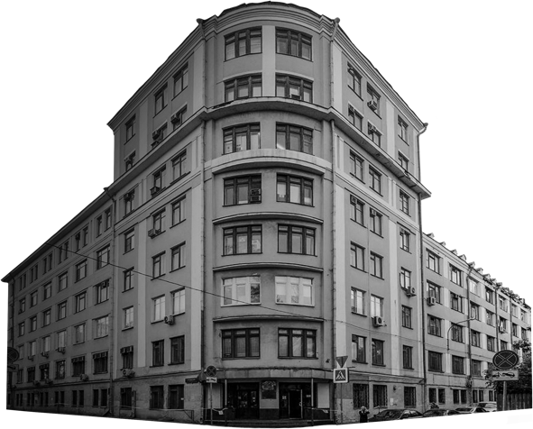

Девять
простых
советов о
подготовке,
учебе, досуге
и управлении
временем для
факультета art,
design & coding
 

Девять
простых
советов о
подготовке,
учебе, досуге
и управлении
временем для
факультета art,
design & coding

В августе, дождавшись приказа о зачислении и, наконец, ощутив себя
первокурсником, ты наверняка уже стал задумываться, как продуктивно
провести оставшиеся дни лета, чтобы с началом осени быстро втянутся
в студенческую жизнь. На этот случай ниже ты найдешь несколько идей
и материалов, которые могут помочь
вам настроиться на предстоящий год.
Книги этой серии тебе наверняка
зададут прочитать по приходе в Вышку,
поэтому, взявшись за них
самостоятельно, ты не только сможешь
разобрать закономерности контрастов
цветов и форм, но и впоследствии
сэкономить время в период учебы.
К тому же, навыки, описанные в этих
книгах, наверняка пригодятся тебе
уже для самых первых заданий
и проектов.
Фильм Гельветика не столько дает
какие-либо практические знания,
сколько помагает настроиться
на нужный лад для понимания
дизайна и типографики в целом. Так,
он включает в себя исследование
городского пространства и шрифтов,
которые его наполняют, а также цикл
бесед с известными дизайнерами
о выборе шрифтов и от том, какое
влияние оказывает этот выбор.
Если ты никогда не пытался
самостоятельно изучить HTML
и CSS, то эта платформа может
помочь тебе сориентироваться
в основах и не растеряться на первых
парах по верстке. Конечно, материал,
касающийся кода, будет разбираться
на занятиях начиная с самых основ,
но, потратив несколько дней
на подготовку, ты будешь чуствовать
себя гораздо увереннее.
К началу сентября, после организационного собрания и встречи с кураторами, ты уже будешь иметь представление о том, как будет проходить твой первый модуль в Вышке. Чтобы грамотно распределить все предстоящие события, обрати внимание на несколько советов ниже, которые как раз касаются управления временем в начале учебы:
Расставь приоритеты. Вышка предоставляет множество вариантов для дополнительного образования и досуга, но важно помнить, что первый курс примечателен в первую очередь тем, что помогает пристособится к ритму учебы. Так, надежнее будет повременить с выбором дополнительных занятий, сосредоточившись на основных дисциплинах.
Не оставляй организационные вопросы на потом. В начале года, непременно появляется соблазн отложить изготовление социальной карты и получение протусков. Тем не менее гораздо лучше не поддаваться искушению и разобраться с делами сразу, ведь именно эти несколько сэкономленных часов в конце модуля, могут выручить тебя перед просмотром.
Делай проекты заранее, поступательно. Делая задание в последний день, сложно рассчитывать на качество, достаточное для того, чтобы впоследствии добавить итоговую работу в резюме. Постарайся подходить к выполнению заданий с точки зрения долгосрочных целей: получения навыков, нужных для будущей профессии, составления своего портфолио; пробуй распределить время так, чтобы все делать последовательно.

С помощью этого графика ты сможешь проследить, как изменялось количество свободного времени у первокурсников в 2019-м году и, при необходимоти, еще раз скорректировать свои планы.
Научись гуглить. Критически относись к любой информации. Разберись с тем, что вбивать в поисковой строке. Один из важнейших навыков, который будет развивать в нас учеба в университете, — искать и находить то, что нужно. Анализируй больше данных, все подвергай сомнению, перепроверяй источникии докапывайся до первоисточников.
Узнай, что интересного может предложить тебе Вышка. Выясни сразу, какие дополнительные образовательные программы реализует вуз (факультативы, курсы, программы обмена с зарубежными университетами), какие студенческие объединения существуют на факультете, какие возможности предоставляются студентам для прохождения практик и стажировок, есть ли у университета постоянные компании-партнёры, какова вероятность трудоустройства по результатам стажировок.
Не забывай про хобби и досуг. Несмотря на то, что в начале года действительно важно бросить максимальное количество сил на освоение программы института, не стоит обстрагироваться от внешней жизни и забывать про нее. Не становись заложником своего писменного стола, ведь тебе непременно пригодятся новые впечатления, чтобы развить их в своих работах и не потерять вдохновение. Ходи на выставки, посещай мастерклассы и воркшопы, обращай внимание на то, что происходит вокруг тебя.